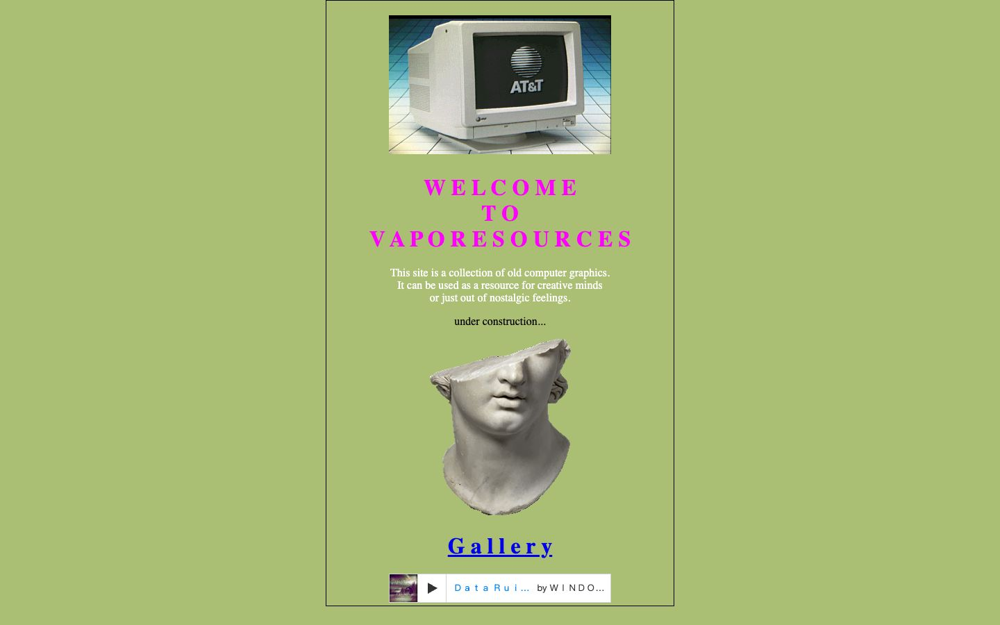

References / Website / 369
Vaporesources
A Neocities collection of old computer graphics, introduced by a CRT monitor on a grid floor, a broken marble head, and letter-spaced magenta capitals.
- Source
- vaporesources.neocities.org
- Style
- Vaporwave (agent-proposed, not yet reviewed by a person)
- Moods
- Nostalgic, quiet, amateur
- Evidence
- Captured with
tools/capture.mjs(headless Chrome, 1440 × 900) on 28 September 2026 and inspected. The screenshot shows the first viewport; the measurement covers up to four screens. - Reviewed
- Rights
- Third-party work, stored with credit for commentary. License: unverified. Rights policy
Observed
- A narrow column with a thin black outline is centred on a flat sage-green page.
- At the top, a photograph shows a beige AT&T CRT monitor standing on a receding blue-and-white grid floor.
- WELCOME TO VAPORESOURCES is set in bold magenta Times capitals with a space between every letter.
- A cut-out fragment of a classical marble head sits below, above a spaced blue “G a l l e r y” link and a small Bandcamp player.
Why it belongs
The spaced heading is typed with a space between each letter, not set with CSS letter-spacing, so the measured heading tracking is 0. The grid floor is inside a photograph, so pattern share is 0 too.
Measured
Machine-extracted by tools/extract-traits.js on . Full measurement.
- Type families
- Times (100%)
- Type scale ratio
- 2
- Median radius
- null px
- Mean chroma
- 0.03
- Palette
- #ffffff 86%
- #000000 11%
- #ff00ff 2%
- #0000ee 1%

